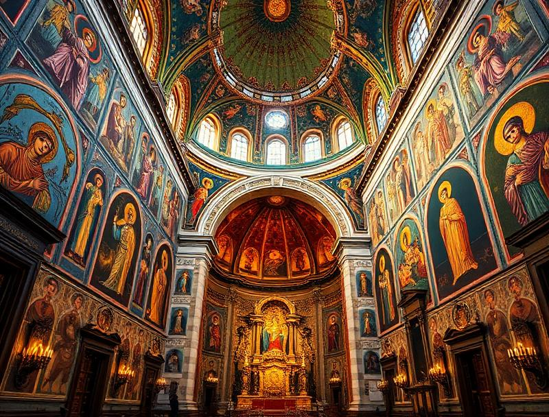
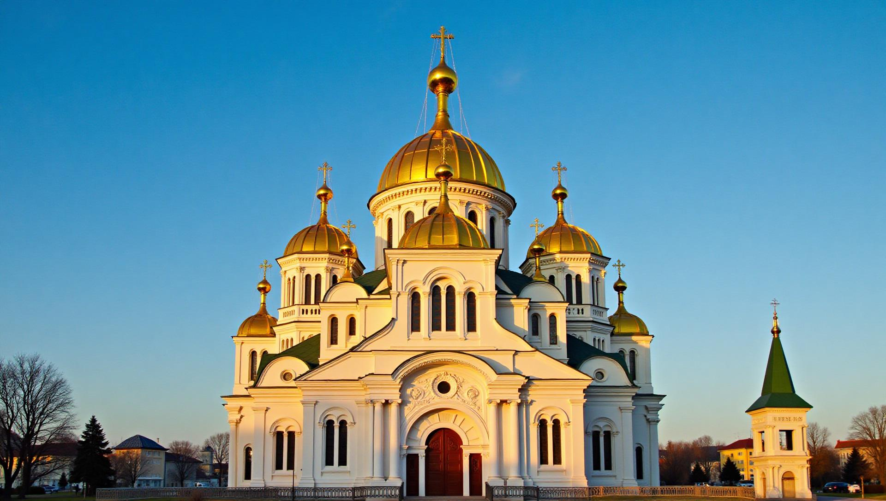
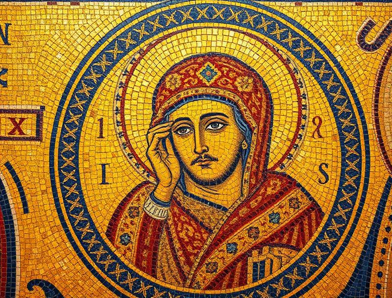

Архітектурна перлина Києва з XI століття
Софійський собор у Києві — видатна пам'ятка української та світової архітектури, збудована у XI столітті за часів князя Ярослава Мудрого. Цей величний храм є свідком тисячолітньої історії України та символом духовної і культурної спадщини нашого народу.
У 1990 році Софійський собор разом із прилеглими монастирськими будівлями був внесений до списку Всесвітньої спадщини ЮНЕСКО як одна з найціннісних пам'яток світової культури.
Ярослав Мудрий заклав собор на честь перемоги над печенігами. Назва храму походить від constantinопольської Софії.
Під час монгольської навали собор зазнав значних пошкоджень, але унікальні мозаїки та фрески збереглися.
Собор отримав зовнішнє барокове оформлення, яке поєднало давньоруські традиції з новими архітектурними віяннями.
Софійський собор визнано об'єктом Всесвітньої спадщини ЮНЕСКО, підтверджуючи його універсальну цінність.
13 куполів символізують Ісуса Христа та 12 апостолів. Центральний купол піднімається на висоту 29 метрів.
Понад 260 м² давніх мозаїк та 3000 м² фресок XI століття, що збереглися донині.
Довжина — 37 м, ширина — 55 м. П'ятинавна будівля з широким трансептом та хорами.

Мозаїки Софійського собору — це справжня скарбниця візантійського мистецтва. Найвідоміша з них — "Богоматір Оранта" (Непорушна Стіна), що височіє в апсиді собору.


| Параметр | Значення | Примітки |
|---|---|---|
| Рік заснування | 1037 | За князя Ярослава Мудрого |
| Кількість куполів | 13 | Первісно було 13 куполів |
| Висота | 29 метрів | Центральний купол |
| Площа мозаїк | 260 м² | Унікальні мозаїки XI ст. |
| Площа фресок | 3000 м² | Найбільша колекція в Україні |
| Статус ЮНЕСКО | 1990 | Всесвітня спадщина |
Маєте питання? Заповніть форму нижче